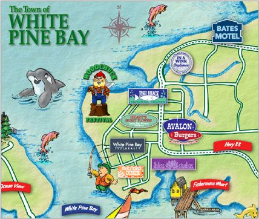
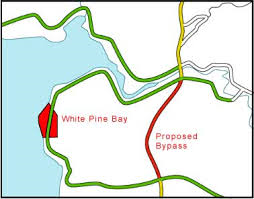
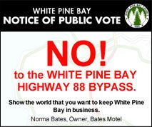

|  |
Bates Motel
4019 HWY 88
White Pine Bay OR 97300 Historic Bates Motel is conveniently located on scenic coastal Highway 88 in beautiful White Pine Bay, OR.
From the North
After crossing Bone River, follow Highway 88 south for approximately 12 miles. Bates Motel will be on your left-hand side. If you pass Spruce St. South, you've gone too far.
From the South
After crossing the Copper River, head 6 miles north on Highway 88. Bates Motel will be on your right-hand side. If you pass Quaker Avenue NE, you've gone too far.
|
Discover beautiful scenery. Community. Home. Hope.
|

NO to the
WHITE PINE BAY HIGHWAY 88 BYPASS. |
Do you value your livelihood? Do you value the sense of community that comes from taking pride in a bustling main street filled with locally-owned businesses, filled with locally-produced goods?
The city wants to change all that. The proposed White Pine Bay Highway 88 Bypass will take the customers, tourists, and other visitors whose business this town has come to rely on, and send them - not down our main street - but around the town entirely. Who will buy our artisan cheeses? Who will take home links of locally raised pork sausages? Who will visit to take in the bay views, staying at the historic Bates Motel, formerly the Seafairer, built in the '50s and still standing today, a testament to the hard working men and women who founded White Pine Bay. If you care about the businesses you've fought and bled to keep afloat; if you care about your neighbors, who have always lent a hand when you needed it; if you care about your children, and the legacy you will leave them, join with me now in saying... Show your support! Show the world that you want to keep White Pine Bay in business. Norma Bates, Owner, Bates Motel
|
Thanks for choosing to support our cause.
Use this embed code to post the image below onto your own website to support us in our fight to stop the construction of the Highway 88 Bypass.
|  |
Copy Embed Code |
Directions